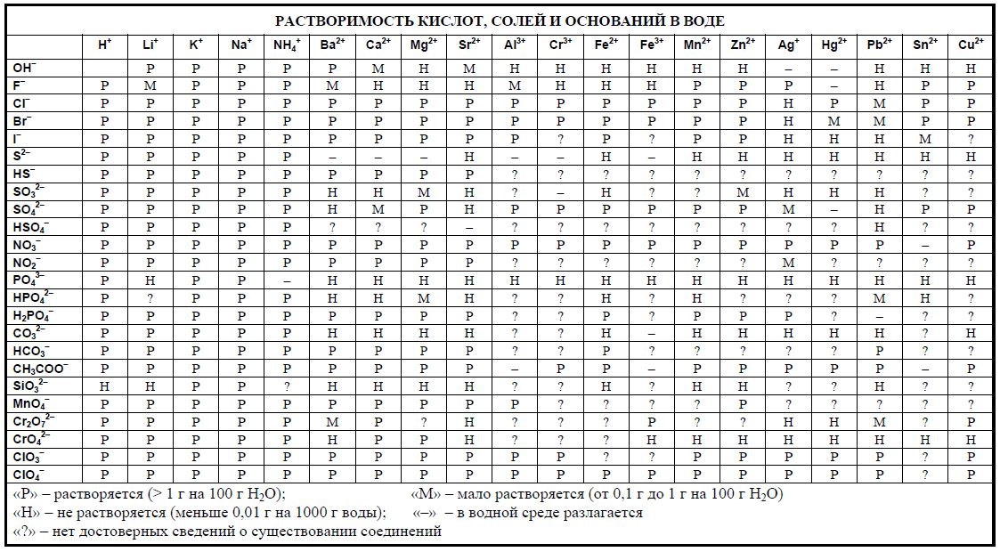

Существует 6 правил для нахождения степеней окисления:
Степень окисления атомов простого вещества (состоящего из атомов одного элемента) всегда равна 0.
Примеры: O(0)2, O(0)3, S(0), S(0)8, Mg(0), F(0)2
Степень окисления F в соединениях всегда равна -1.
Помните, в предыдущем уроке мы говорили о том, что F любит притягивать электроны? Фтор существует в двух состояниях: либо фтор в простом веществе F2 и его степень окисления 0, либо фтор в составе соединения и его степень окисления -1.
Примеры: KF(-1), MgF(-1)2
Степень окисления металлов в соединениях всегда положительна и для большинства металлов берется из первой строки таблицы растворимости.
Таблица растворимости формата ЕГЭ-2020 (при клике откроется в новой вкладке).
Примеры: K(+1)F, Mg(+2)F2, Zn(+2)SO4, Ag(+1)NO3
Для 4 металлов степень окисления нельзя брать из таблицы растворимости и надо каждый раз рассчитывать: Fe, Cu, Mn, Cr. Это связано с тем, что Fe, Cu, Mn, Cr проявляют разные степени окисления в соединениях - обратите внимание, железо встречается в таблице растворимости дважды: бывают соединения Fe(+2) и Fe(+3). Отметим, что как и у других металлов, у Fe, Cu, Mn, Cr степень окисления в соединениях всегда положительна. Мы научимся находить степени окисления этих металлов позже. У остальных же металлов степень окисления в соединении всегда одна и та же и совпадает с табличной.
Обратите внимание: в таблице растворимости степени окисления записаны немного иначе, чем мы делали это раньше: знак “+” пишется после числа, а не перед, и если степень окисления равна “+1”, то в таблице растворимости это будет записано как просто “+”, т.е. единица не пишется. Позже мы узнаем причины такой странной записи.
Сумма степеней окисления всех атомов в молекуле равна 0.
Для пояснения этого правила воспользуемся таблицей с рассчетами. Чтобы понять, откуда взялось число в таблице, нажмите на ячейку.
Примеры:
Mg(+2)F(-1)2
K(+1)F(-1)
Обратите внимание, как правила 2, 3 и 4 идеально сочетаются и не противоречат друг другу.
Степень окисления H в большинстве соединений равна +1.
Водород противоположен фтору в отношении с электронами: водород предпочитает отдавать свои электроны.
Примеры: H(+1)2SO4, H(+1)2O, CH(+1)4
Соединения, не входящие в большинство. Водород проявляет степень окисления -1 будучи в соединении тет-а-тет с металлом, т.е. когда других элементов в веществе нет: KH(-1), CaH(-1)2 . Такие соединения называют гидридами.
В школах эти соединения часто преподносят как исключения, противоречащие правилам. Но на самом деле, никакого противоречия нет - правила 3, 4 строго соблюдены:
K(+1)H(-1)
Ca(+2)H(-1)2
Важный момент. Если в соединении есть другие элементы помимо водорода и металла, у водорода степень окисления будет как по правилу, +1: KH(+1)CO3, CaH(+1)PO4. Это объясняется так: и металлы, и водород предпочитают отдавать электроны. Когда в соединении помимо водорода и металла есть другие элементы, кто нибудь из других элементов возьмет к себе их электроны (обычно это кислород). Когда других элементов, кроме металла и водорода нет, водород вынужден принимать электроны у металла, т.к. у металла способность "впаривать" свои электроны другим атомам выше, чем у водорода.
Степень окисления O в большинстве соединений равна -2.
Примеры: H2SO(-2)4, H2O(-2)
Соединения, не входящие в большинство:
Кислород проявляет степень окисления +1 и +2 в двух соединениях с фтором, который, согласно правилу 2 имеет в них степень окисления -1: O(+2)F(-1)2, O(+1)2F(-1)2.
Формально, кислород проявляет степень окисления -0.5 в соединениях
K
O-0.52
,
Rb
O-0.52
,
Cs
O-0.52
.
Кислород проявляет степень окисления -1 в соединениях: H2O(-1)2, Na2O(-1)2, BaO(-1)2.
Обратите внимание, как ни одно из правил 1-5 не нарушилось:
O(+2)F(-1)2
O(+1)2F(-1)2
K(+1)O(-0.5)2
H(+1)2O(-1)2
Na(+1)2O(-1)2
Ba(+2)O(-1)2
Из всех этих необычных соединений кислорода нам будет попадаться только два: H2O2 - перекись водорода, и Na2O2 - пероксид натрия.
Как понять, что степени окисления расставлены верно?
Очень просто. Степени окисления расставлены верно, когда ни одно из правил выше не нарушается.
Элементы, про которые умалчивают правила
В наших правилах не было ни слова про то, как находить степени окисления S, Cl, Br, C и многих других элементов. Степень окисления таких элементов находится по правилу 4: она равна такому числу, чтобы сумма степеней окисления всех атомов в молекуле равнялась 0. Вот как это работает:
Найдем степень окисления серы в K2SO4. Для этого сделаем следующее:
Расставим степени окисления у элементов, на которые у нас есть правила - это калий и кислород: K(+1)2SO(-2)4.
Сложим все степени окисления калия и кислорода с учетом их содержания в молекуле: 2 калия по +1 и 4 кислорода по -2. Итого, в сумме -6:
K(+1)2SO(-2)4
Правило 4 гласит, что сумма всех степеней окисления в молекуле должна равняться 0. Значит, недостающая степень окисления серы равна +6:
K(+1)2S(+6)O(-2)4
Это плюс-минус рабочий алгоритм нахождения степеней окисления любых элементов. В следующих уроках мы увидим его несовершенства и исправим их, а пока - пользуйтесь им.